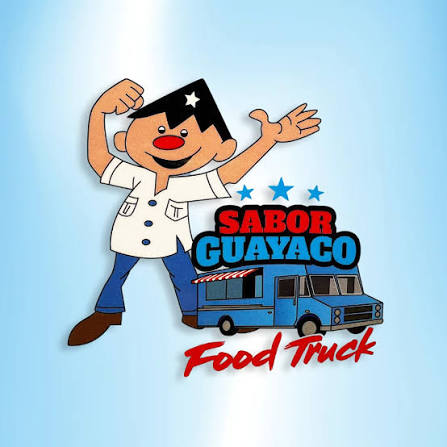
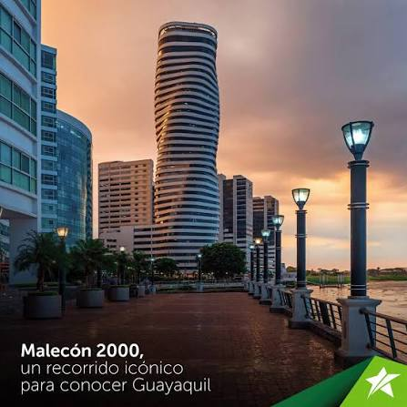
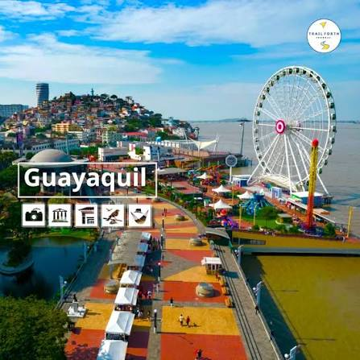
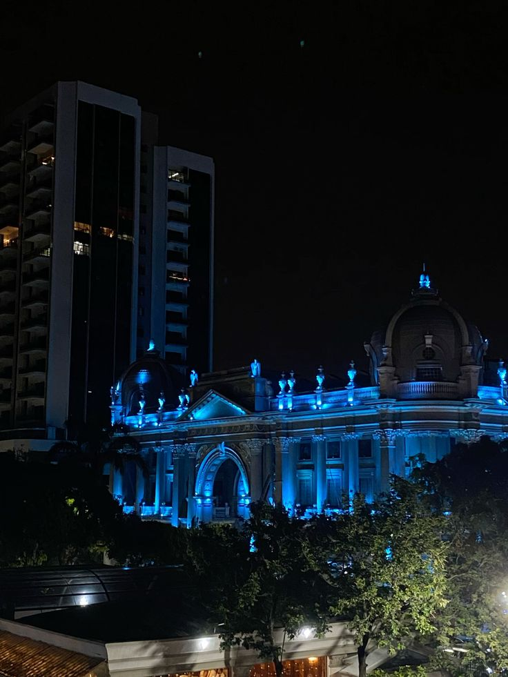
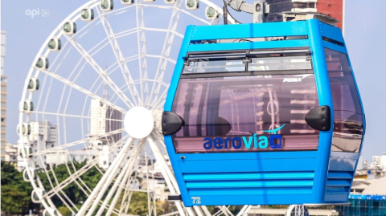
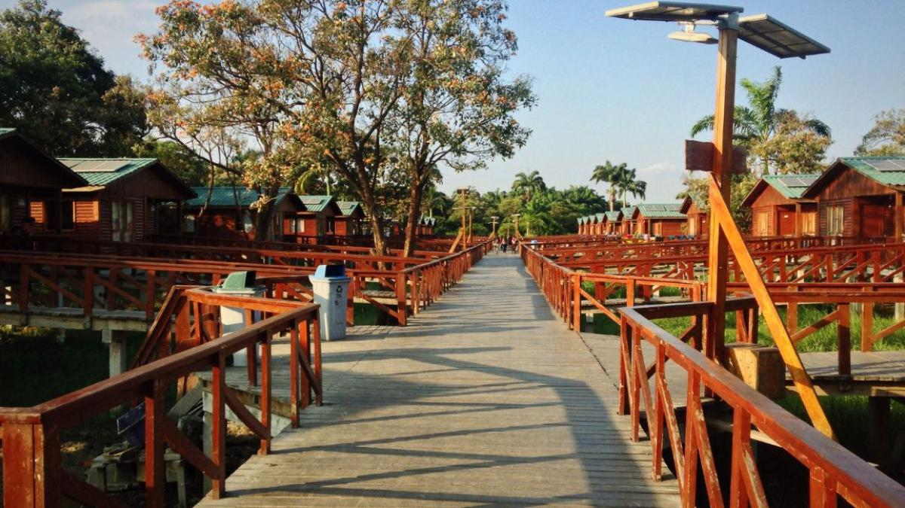

Tour Gastronómico "Sabor Guayaco"
Un recorrido guiado por las huecas tradicionales para degustar encebollado, ceviche de camarón, seco de chivo, guatita y cangrejo criollo.
$35.00 por persona

Un recorrido guiado por las huecas tradicionales para degustar encebollado, ceviche de camarón, seco de chivo, guatita y cangrejo criollo.
$35.00 por persona

Visita guiada en transporte climatizado por la Columna de los Próceres, Catedral Metropolitana, Parque Las Iguanas y Subida al Cerro Santa Ana.
$25.00 por persona

Paseo en embarcación turística a lo largo del malecón con vista panorámica de la ciudad, música en vivo y cóctel de bienvenida.
$20.00 por persona

Incluye 2 noches de hospedaje en hotel 4 estrellas, desayunos buffet, City Tour privado y entrada preferencial a centros culturales.
$145.00 por persona

Experiencia aérea cruzando el Río Guayas en el sistema de transporte suspendido con vistas espectaculares de la ciudad iluminada.
$15.00 por persona

Caminata ecológica guiada o alquiler de bicicleta a través de las peatonalizadas de la isla con visita a la cocodrilera local.
$18.00 por persona